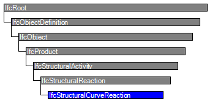

Natural language names
 | linienförmige Auflagerreaktion |
 | Structural Curve Reaction |
| linienförmige Auflagerreaktion |
| Structural Curve Reaction |
| Item | SPF | XML | Change | Description | IFC2x3 to IFC4 |
|---|---|---|---|---|
| IfcStructuralCurveReaction | ADDED |
This entity defines a reaction which occurs distributed over a curve. A curve reaction may be connected with a curve member or curve connection, or surface member or surface connection.
HISTORY New entity in IFC4.
Coordinate Systems:
See definitions at IfcStructuralActivity.
Topology Use Definitions:
Standard Case:
If connected with a curve item, instances of IfcStructuralCurveRection shall not
have an ObjectPlacement nor a Representation. It is implied that the
placement and representation of the IfcStructuralActivity is the same as the ones
of the member or connection.
Special Case:
If connected with a surface item, instances of IfcStructuralCurveReaction shall
have an ObjectPlacement and Representation, containing an IfcEdgeCurve.
See IfcStructuralActivity for further definitions.
Informal Propositions:
| # | Attribute | Type | Cardinality | Description | C |
|---|---|---|---|---|---|
| 10 | PredefinedType | IfcStructuralCurveActivityTypeEnum | [1:1] | Type of reaction according to its distribution of load values. | X |
| Rule | Description |
|---|---|
| HasObjectType | The attribute ObjectType shall be given if the predefined type is set to USERDEFINED. |
| SuitablePredefinedType | The SINUS and PARABOLA distribution types are out of scope of structural curve reactions. |

| # | Attribute | Type | Cardinality | Description | C |
|---|---|---|---|---|---|
| IfcRoot | |||||
| 1 | GlobalId | IfcGloballyUniqueId | [1:1] | Assignment of a globally unique identifier within the entire software world. | X |
| 2 | OwnerHistory | IfcOwnerHistory | [0:1] |
Assignment of the information about the current ownership of that object, including owning actor, application, local identification and information captured about the recent changes of the object,
NOTE only the last modification in stored - either as addition, deletion or modification. | X |
| 3 | Name | IfcLabel | [0:1] | Optional name for use by the participating software systems or users. For some subtypes of IfcRoot the insertion of the Name attribute may be required. This would be enforced by a where rule. | X |
| 4 | Description | IfcText | [0:1] | Optional description, provided for exchanging informative comments. | X |
| IfcObjectDefinition | |||||
| HasAssignments | IfcRelAssigns @RelatedObjects | S[0:?] | Reference to the relationship objects, that assign (by an association relationship) other subtypes of IfcObject to this object instance. Examples are the association to products, processes, controls, resources or groups. | X | |
| Nests | IfcRelNests @RelatedObjects | S[0:1] | References to the decomposition relationship being a nesting. It determines that this object definition is a part within an ordered whole/part decomposition relationship. An object occurrence or type can only be part of a single decomposition (to allow hierarchical strutures only). | X | |
| IsNestedBy | IfcRelNests @RelatingObject | S[0:?] | References to the decomposition relationship being a nesting. It determines that this object definition is the whole within an ordered whole/part decomposition relationship. An object or object type can be nested by several other objects (occurrences or types). | X | |
| HasContext | IfcRelDeclares @RelatedDefinitions | S[0:1] | References to the context providing context information such as project unit or representation context. It should only be asserted for the uppermost non-spatial object. | X | |
| IsDecomposedBy | IfcRelAggregates @RelatingObject | S[0:?] | References to the decomposition relationship being an aggregation. It determines that this object definition is whole within an unordered whole/part decomposition relationship. An object definitions can be aggregated by several other objects (occurrences or parts). | X | |
| Decomposes | IfcRelAggregates @RelatedObjects | S[0:1] | References to the decomposition relationship being an aggregation. It determines that this object definition is a part within an unordered whole/part decomposition relationship. An object definitions can only be part of a single decomposition (to allow hierarchical strutures only). | X | |
| HasAssociations | IfcRelAssociates @RelatedObjects | S[0:?] | Reference to the relationship objects, that associates external references or other resource definitions to the object.. Examples are the association to library, documentation or classification. | X | |
| IfcObject | |||||
| 5 | ObjectType | IfcLabel | [0:1] |
The type denotes a particular type that indicates the object further. The use has to be established at the level of instantiable subtypes. In particular it holds the user defined type, if the enumeration of the attribute PredefinedType is set to USERDEFINED.
| X |
| IsDeclaredBy | IfcRelDefinesByObject @RelatedObjects | S[0:1] | Link to the relationship object pointing to the declaring object that provides the object definitions for this object occurrence. The declaring object has to be part of an object type decomposition. The associated IfcObject, or its subtypes, contains the specific information (as part of a type, or style, definition), that is common to all reflected instances of the declaring IfcObject, or its subtypes. | X | |
| Declares | IfcRelDefinesByObject @RelatingObject | S[0:?] | Link to the relationship object pointing to the reflected object(s) that receives the object definitions. The reflected object has to be part of an object occurrence decomposition. The associated IfcObject, or its subtypes, provides the specific information (as part of a type, or style, definition), that is common to all reflected instances of the declaring IfcObject, or its subtypes. | X | |
| IsTypedBy | IfcRelDefinesByType @RelatedObjects | S[0:1] | Set of relationships to the object type that provides the type definitions for this object occurrence. The then associated IfcTypeObject, or its subtypes, contains the specific information (or type, or style), that is common to all instances of IfcObject, or its subtypes, referring to the same type. | X | |
| IsDefinedBy | IfcRelDefinesByProperties @RelatedObjects | S[0:?] | Set of relationships to property set definitions attached to this object. Those statically or dynamically defined properties contain alphanumeric information content that further defines the object. | X | |
| IfcProduct | |||||
| 6 | ObjectPlacement | IfcObjectPlacement | [0:1] | Placement of the product in space, the placement can either be absolute (relative to the world coordinate system), relative (relative to the object placement of another product), or constraint (e.g. relative to grid axes). It is determined by the various subtypes of IfcObjectPlacement, which includes the axis placement information to determine the transformation for the object coordinate system. | X |
| 7 | Representation | IfcProductRepresentation | [0:1] | Reference to the representations of the product, being either a representation (IfcProductRepresentation) or as a special case a shape representations (IfcProductDefinitionShape). The product definition shape provides for multiple geometric representations of the shape property of the object within the same object coordinate system, defined by the object placement. | X |
| ReferencedBy | IfcRelAssignsToProduct @RelatingProduct | S[0:?] | Reference to the IfcRelAssignsToProduct relationship, by which other products, processes, controls, resources or actors (as subtypes of IfcObjectDefinition) can be related to this product. | X | |
| IfcStructuralActivity | |||||
| 8 | AppliedLoad | IfcStructuralLoad | [1:1] |
Load or result resource object which defines the load type, direction, and load values.
In case of activities which are variably distributed over curves or surfaces, IfcStructuralLoadConfiguration is used which provides a list of load samples and their locations within the load distribution, measured in local coordinates of the curve or surface on which this activity acts. The contents of this load or result distribution may be further restricted by definitions at subtypes of IfcStructuralActivity. | X |
| 9 | GlobalOrLocal | IfcGlobalOrLocalEnum | [1:1] |
Indicates whether the load directions refer to the global coordinate system (global to
the analysis model, i.e. as established by IfcStructuralAnalysisModel.SharedPlacement)
or to the local coordinate system (local to the activity or connected item, as established by
an explicit or implied representation and its parameter space).
NOTE, the informal definition of IfcRepresentationResource.IfcGlobalOrLocalEnum doe s not distinguish between "global coordinate system" and "world coordinate system". On the other hand, this distinction is necessary in the IfcStructuralAnalysisDomain where the shared "global" coordinate system of an analysis model may very well not be the same as the project-wide world coordinate system. NOTE In the scope of IfcStructuralActivity.GlobalOrLocal, the meaning of GLOBAL_COORDS is therefore not to be taken as world coordinate system but as the analysis model specific shared coordinate system. In contrast, LOCAL_COORDS is to be taken as coordinates which are local to individual structural items and activities, as established by subclass-specific geometry use definitions. | X |
| AssignedToStructuralItem | IfcRelConnectsStructuralActivity @RelatedStructuralActivity | S[0:1] | Reference to the IfcRelConnectsStructuralActivity relationship by which activities are connected with structural items. | X | |
| IfcStructuralReaction | |||||
| IfcStructuralCurveReaction | |||||
| 10 | PredefinedType | IfcStructuralCurveActivityTypeEnum | [1:1] | Type of reaction according to its distribution of load values. | X |
Structural Activity
The Structural Activity concept applies to this entity as shown in Table 630.
| ||||||
Table 630 — IfcStructuralCurveReaction Structural Activity |
| # | Concept | Model View |
|---|---|---|
| IfcRoot | ||
| Software Identity | Common Use Definitions | |
| Revision Control | Common Use Definitions | |
| IfcObject | ||
| Object Occurrence Predefined Type | Common Use Definitions | |
| IfcStructuralCurveReaction | ||
| Structural Activity | Common Use Definitions | |
<xs:element name="IfcStructuralCurveReaction" type="ifc:IfcStructuralCurveReaction" substitutionGroup="ifc:IfcStructuralReaction" nillable="true"/>
<xs:complexType name="IfcStructuralCurveReaction">
<xs:complexContent>
<xs:extension base="ifc:IfcStructuralReaction">
<xs:attribute name="PredefinedType" type="ifc:IfcStructuralCurveActivityTypeEnum" use="optional"/>
</xs:extension>
</xs:complexContent>
</xs:complexType>
ENTITY IfcStructuralCurveReaction
SUBTYPE OF (IfcStructuralReaction);
PredefinedType : IfcStructuralCurveActivityTypeEnum;
WHERE
HasObjectType : (PredefinedType <> IfcStructuralCurveActivityTypeEnum.USERDEFINED) OR EXISTS(SELF\IfcObject.ObjectType);
SuitablePredefinedType : (PredefinedType <> IfcStructuralCurveActivityTypeEnum.SINUS) AND (PredefinedType <> IfcStructuralCurveActivityTypeEnum.PARABOLA);
END_ENTITY;
 Instance diagram
Instance diagram Link to this page
Link to this page